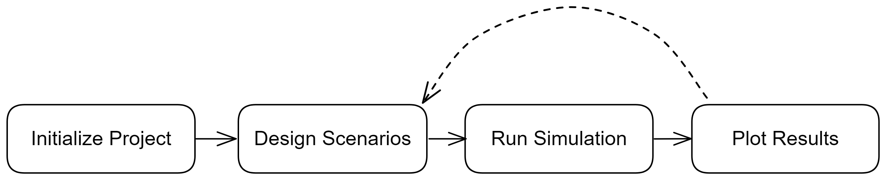

Everything esqlabsR does is organized around a
Project: a single object that holds the models,
subjects, dosing, parameters, outputs, observed data, and figures for an
analysis. You set it up once, then load it, run scenarios from it, and
plot the results. This article covers what a Project is, how it lives on
disk, and how you load, edit, save, and share it.
The workflow at a glance
A typical analysis moves through four steps:
-
Load or scaffold a project. Read an existing
project with
loadProject(), or create a fresh one withinitProject(). -
Author its definitions. Add or edit the scenarios,
individuals, populations, parameter sets, applications, and output paths
that describe what you want to simulate. See
vignette("design-scenarios"). -
Run scenarios. Call
runScenarios()to simulate and collect results. Seevignette("run-simulations"). -
Plot and share. Build figures from the results with
createPlots(), and hand the project to a colleague as a single self-contained file. Seevignette("plot-results").
Step 1 happens once. Steps 2 to 4 are where you iterate, tuning scenarios and figures as the analysis takes shape.

A project on disk
A project is a directory. At its root sits the
Project.json file alongside a definitions/
folder that holds the authored definition files. Around them are working
folders that hold the files the definitions point at:
MyProject/
├── Project.json # the Project file: metadata and file paths
├── definitions/ # the authored source of truth
│ ├── scenarios/ # one JSON file per scenario
│ │ ├── aciclovir_iv.json
│ │ ├── aciclovir_iv_population.json
│ │ └── aciclovir_iv_steadystate.json
│ ├── individuals/ # one file per individual
│ ├── populations/ # one file per population
│ ├── parameter-sets/ # one file per parameter set
│ ├── applications/ # one file per application
│ ├── output-paths/ # one file per output path
│ ├── observed-data/ # one file per observed-data source
│ ├── parameter-identification/ # one file per parameter-identification task
│ ├── data-combined/ # one file per data combination
│ ├── plots/ # one file per plot configuration
│ └── plot-grids/ # one file per plot grid
├── Models/
│ ├── Simulations/ # model PKML files
│ └── Snapshots/ # PK-Sim / MoBi snapshots (reserved for a future release)
├── Data/ # observed-data files and importer configuration
├── Populations/ # population CSV files
└── Results/ # simulation outputs and figures
├── Figures/
└── SimulationResults/Each working folder ships with a short README.md so it
stays under version control even while empty (git does not track empty
folders), and initProject() writes the same placeholders
into a project it scaffolds.
The distinction between these two regions matters:
-
definitions/is the authored source of truth. Each kind of definition gets its own subfolder, with one JSON file per definition named after that definition’s id; for exampleaciclovir_iv.jsonholds the scenario whose id isaciclovir_iv. The plots feature spans three subfolders (data-combined/,plots/,plot-grids/), one file per definition. -
The working folders hold the files the definitions
reference. A scenario names a model file that lives under
Models/; a population scenario points at a CSV underPopulations/; an observed-data source points at a file underData/; results are written underResults/.
The Project.json file records the project metadata and
the working-folder layout. Its main fields are:
-
nameand optionaldescription: a human label and free text, surfaced when you print the project. Editing one (project$info$name <- "...") changes the project in memory; it reaches disk on the nextsaveProject(). - the schema and esqlabsR versions that wrote the file.
-
definitionsFolder: where thedefinitions/tree lives (definitionsby default). -
filePaths: the four working folders (simulationsFolder,dataFolder,populationsFolder,outputFolder). -
defaultSimulationRunOptions(optional): run defaults such as the number of cores, whichrunScenarios()falls back on when you pass no run options of your own.
A project that also keeps an Excel project carries a separate
excel block naming the workbook files; a from-scratch JSON
project has none.
A working-folder path may embed an environment variable, so a folder
can live outside the project tree without hard-coding a machine-specific
location. Write it as ${VAR} anywhere in the path (for
example "dataFolder": "${PROJECT_DATA_FOLDER}/Aciclovir" to
keep observed data on a shared drive); the variable is substituted when
the path is resolved, and an unset variable is left in place rather than
blanking the path. This applies to every folder in
filePaths, so the same project loads on different machines
by setting the variable per machine.
The in-memory project
On disk a project is files; in R it is a single in-memory
Project object. Every workflow function consumes this
object, so the first thing you do in a session is bring one into
memory.
Loading an existing project
loadProject() reads a Project.json and its
definitions/ tree into a Project. The package
ships a complete worked example; exampleProjectPath()
returns the path to its Project.json.
project <- loadProject(exampleProjectPath())
project
#> <Project>
#> • Name: Example
#> • Description: Aciclovir IV PK example project
#> • Schema Version: 2.0
#> • esqlabsR Version: 6.0.0
#> • JSON File: Project.json
#>
#> ── Paths ───────────────────────────────────────────────────────────────────────
#> • Simulations Folder: Models/Simulations
#> • Data Folder: Data
#> • Populations Folder: Populations
#> • Output Folder: Results
#> • Definitions Folder: definitions
#>
#> ── Definitions ─────────────────────────────────────────────────────────────────
#> • Scenarios: 3
#> • Individuals: 1
#> • Populations: 1
#> • Parameter Sets: 4
#> • Initial Conditions: 1
#> • Applications: 1
#> • Output Paths: 2
#> • Observed Data: 1
#> • Data Combined: 1
#> • Plots: 1
#> • Plot Grids: 1
#> • Parameter Identification: 1
#>
#> ── Excel ───────────────────────────────────────────────────────────────────────
#> • Configurations Folder: Configurations/
#> • Model Parameters File: ModelParameters.xlsx
#> • Individuals File: Individuals.xlsx
#> • Populations File: Populations.xlsx
#> • Scenarios File: Scenarios.xlsx
#> • Applications File: Applications.xlsx
#> • Plots File: Plots.xlsxPrinting a project shows its name, source path, working folders, and a count of each kind of definition.
The project’s fields are gathered into four groups on the object:
project$info (name, description, versions, file path),
project$paths (the working folders),
project$excel (the Excel workbook names when the project
keeps an Excel side-car), and project$definitions (the
definition sections). The sections live under
project$definitions, each a named list keyed by id that
prints a count and the ids it holds;
project$definitions$individuals,
project$definitions$outputPaths, and the rest resolve the
same way:
project$definitions$scenarios
#> <DefinitionList>
#> scenarios (3 definitions):
#> • aciclovir_iv
#> • aciclovir_iv_population
#> • aciclovir_iv_steadystateWhen loadProject() notices an obvious cross-reference
mistake (for example a scenario pointing at an individual that is not
defined) it warns immediately so the problem surfaces at load time, but
loading still succeeds. For the full picture, run
validateProject(), described below.
Scaffolding a new project
initProject() creates a fresh project in a directory
that already exists. It takes a type:
"minimal" lays down an empty project with just the folder
structure and an empty Project.json, while
"example" copies the complete worked example (models, data,
and the scenario tree) so you have something runnable to start from.
In the chunks below we scaffold into a temporary directory so nothing is written into your working tree. In your own work you would pass the directory where you want the project to live.
minimal_dir <- withr::local_tempdir()
initProject(destination = minimal_dir, type = "minimal", createExcel = FALSE)A minimal project is just the empty scaffold: the working folders and
a Project.json with no definitions yet.
MyProject/
├── Project.json # metadata only, no definitions yet
├── definitions/ # empty subfolders, one per kind
├── Models/
├── Data/
├── Populations/
└── Results/
example_dir <- withr::local_tempdir()
initProject(destination = example_dir, type = "example", createExcel = FALSE)Choosing type = "example" instead fills the
definitions/ tree shown above, one file per definition. (We
pass createExcel = FALSE to keep the example focused on the
JSON form; initProject() can also write an Excel project,
covered in vignette("migrate-from-excel").)
Editing, saving, and sharing
Editing follows an explicit-save model: for a loaded
project, memory is the source of truth. When you
addScenario(), addIndividual(), or edit a
field with setScenario(), the change is made in memory and
the project is marked as having unsaved changes; nothing touches the
definitions/ tree yet. The section accessors
(project$definitions$scenarios and the rest) are read-only,
so a definition only ever changes through one of these functions (or by
editing its file directly); to revise an existing record, read it, edit
the copy, and pass it back through the matching authoring function.
saveProject() commits the edits: it reconciles the
on-disk tree to memory, writing only the entities that changed and
deleting the files of entities you removed, so git diff
shows exactly what you touched. A clean save (nothing to write) is a
harmless no-op that says so. Here we work against the writable copy
scaffolded above (example_dir) rather than the read-only
installed example:
editable <- loadProject(file.path(example_dir, "Project.json"))
addOutputPath(editable, "pvb", "Organism|PeripheralVenousBlood|Aciclovir|Plasma (Peripheral Venous Blood)")
saveProject(editable)reloadProject() is the undo: it discards every unsaved
edit and re-reads the project from disk, in place.
print(editable) marks a project with unsaved changes as
<Project 'name'> [unsaved changes], and
projectStatus(editable) reports, on two axes, whether there
are unsaved edits and whether a sibling Excel project is a stale
export.
Use snapshotProject() to freeze the current in-memory
state (unsaved edits included) to a single self-contained
.esqlabsR file with every section inlined, so the whole
project travels as one file rather than a definitions/
tree. You give it a target dir and an optional
name (the .esqlabsR extension is added for
you; the default name is timestamped), and it returns the path it
wrote.
snapshot_dir <- withr::local_tempdir()
snapshot_path <- snapshotProject(editable, dir = snapshot_dir, name = "study")restoreProject() reads such a file back into a working
project. You give it a target directory, and it materializes the full
definitions/ tree and Project.json file there,
then returns a freshly-loaded Project bound to that
directory:
restored_dir <- withr::local_tempdir()
shared <- restoreProject(snapshot_path, restored_dir)
shared
#> <Project>
#> • Name: Example
#> • Description: Aciclovir IV PK example project
#> • Schema Version: 2.0
#> • esqlabsR Version: 6.0.0
#> • JSON File: Project.json
#>
#> ── Paths ───────────────────────────────────────────────────────────────────────
#> • Simulations Folder: Models/Simulations
#> • Data Folder: Data
#> • Populations Folder: Populations
#> • Output Folder: Results
#> • Definitions Folder: definitions
#>
#> ── Definitions ─────────────────────────────────────────────────────────────────
#> • Scenarios: 3
#> • Individuals: 1
#> • Populations: 1
#> • Parameter Sets: 4
#> • Initial Conditions: 1
#> • Applications: 1
#> • Output Paths: 3
#> • Observed Data: 1
#> • Data Combined: 1
#> • Plots: 1
#> • Plot Grids: 1
#> • Parameter Identification: 1
#>
#> ── Excel ───────────────────────────────────────────────────────────────────────
#> • Configurations Folder: Configurations/
#> • Model Parameters File: ModelParameters.xlsx
#> • Individuals File: Individuals.xlsx
#> • Populations File: Populations.xlsx
#> • Scenarios File: Scenarios.xlsx
#> • Applications File: Applications.xlsx
#> • Plots File: Plots.xlsxBy default restoreProject() unpacks into a fresh
directory and refuses one that already holds a project; pass
overwrite = TRUE to roll a working directory back to the
snapshot in place. A snapshot reloads into a structurally identical
project.
Validating a project
Before you run anything, check that the project hangs together: every
reference resolves, no required field is missing, no id is duplicated.
validateProject() does this and prints a readable report.
Because validation is a step in its own right, with its own diagnostic
levels and a worked example of fixing a problem, it has a dedicated
article: see vignette("validate-project").
Definition ids
Every definition in a project is referenced by its id: a scenario’s id, an individual’s id, an output path’s id, and so on. The same id you give a definition when you create it is the id you use to reference it from elsewhere (a scenario refers to its individual by that individual’s id).
Because an id can also become a filename in the
definitions/ tree, ids are canonicalized
the moment they enter the project: lowercased and made filename-safe
(characters that are illegal in a filename, such as / or
:, are replaced). When canonicalization changes the id you
typed, the authoring function warns so you know the id that was actually
stored:
# Author against the writable scaffold, not the read-only bundled example.
editable <- loadProject(file.path(example_dir, "Project.json"))
addOutputPath(
editable,
id = "Tumor/Drug:Conc",
path = "Organism|Tumor|Drug|Concentration"
)
#> Warning: Canonicalized 1 id to a safe form:
#> • "Tumor/Drug:Conc" -> "tumor_drug_conc"The id you typed, Tumor/Drug:Conc, was stored as
tumor_drug_conc. The canonicalization is deterministic and
applied identically on both sides, so a reference typed the same way as
the definition still resolves to it; you do not have to remember the
exact sanitized form. This is also why the example ids you see
throughout the articles are lowercase: aciclovir_iv,
adult_male, european_adults,
aciclovir_iv_250mg, and so on.
Where to go next
From here, see vignette("design-scenarios") to author
what you want to simulate, vignette("validate-project") to
check it before running, then vignette("run-simulations")
and vignette("plot-results") to execute and visualize
it.